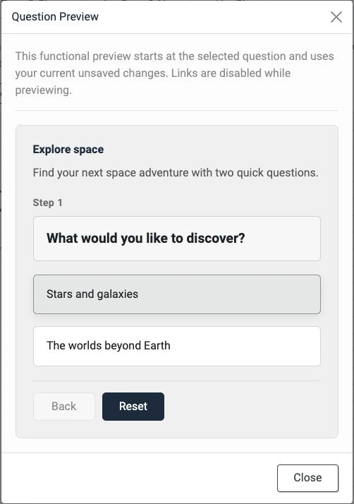

Article 11 · Existing article · /joomla-extensions/decision-tree-pro/decision-tree-pro-demo
Copy preview only. Live Joomla styling and working components are checked during staging.
Decision Tree Pro demo
Follow the choices in this working example to see how a guided journey leads to a useful outcome. Use Back to explore another route or Reset to begin again.
Try the decision tree
The existing live decision tree (ID 5) will render here in Joomla. This local copy preview does not run the live component.
An image outcome in Pro 1.4.0
The screenshot below shows a separate example built with a heading, image, caption, text and button. Image blocks are selected through Joomla’s Media Manager and can be edited from the visual canvas.

Check a branch while you build
In the administrator, use Preview from here to begin at a chosen question, or Preview outcome to inspect a result directly. Both use your current unsaved content.
